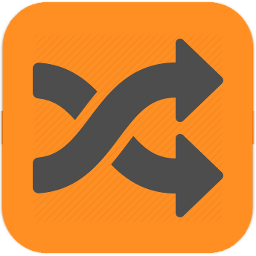
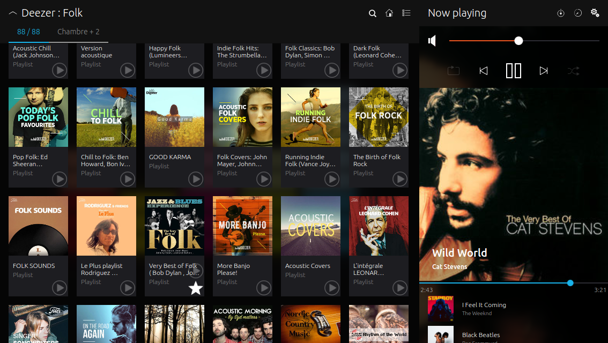

Noson is a SONOS controller for Ubuntu platforms
The fast and smart controller for your SONOS devices. You can browse your music library and play track or radio on any zones. You can manage grouping zones, queue, and playlists, and fully control the playback.
Written with QML/C++ for maximal performance
-
Application for your phone and touch is available from Ubuntu store.
-
Ubuntu packages for your desktop are available in repository
ppa:jlbarriere68/noson-app. Go to noson-app PPA for technical details.
You can install noson-app on your Ubuntu desktop (from 15.10) by the following:
sudo add-apt-repository ppa:jlbarriere68/noson-app sudo apt-get update sudo apt-get install noson-app
Sources code is hosted by github in repository noson-app.

Screenshot
